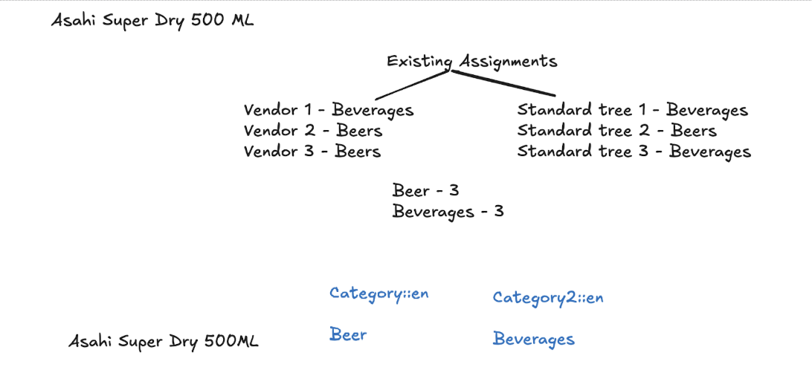
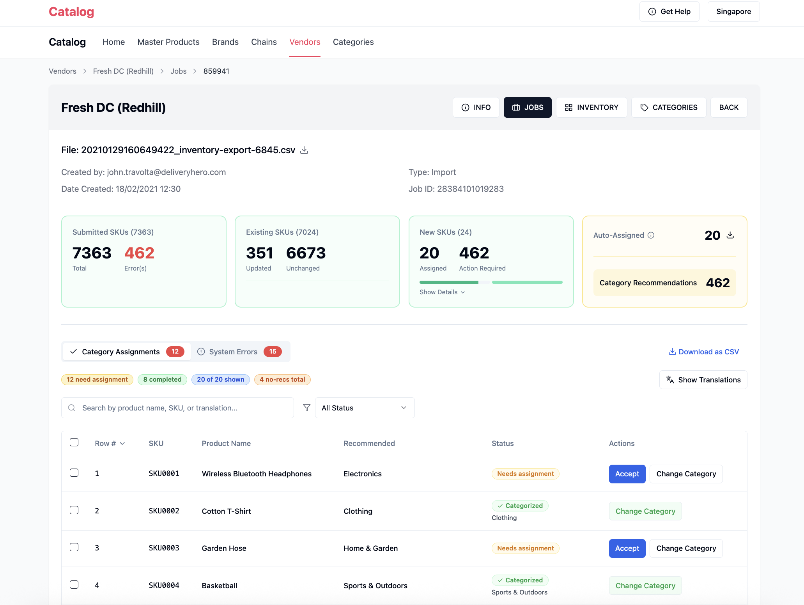

The Problem Worth Solving
Before a product goes live in any Quick Commerce shop, it needs to be placed in the right shopping category — think "Beverages → Soft Drinks" for a Coca-Cola, or "Health & Beauty → Medicines" for paracetamol. Arrange all these categories into a hierarchy and you get a category tree — the navigation structure customers browse to find products in the app. Sounds simple - until you're managing hundreds of these trees across 75+ countries.
Every assignment was manual. An ops specialist would look at each product, look at the category list, and pick the best match - by hand. This was slow, inconsistent, and didn't scale. The result was delayed product availability (products sitting offline for days before going live), lost revenue from uncategorised products, and operational costs that grew with every new partner we onboarded.
54% of shopping sessions on Talabat start from category browsing (vs. 38.9% via search). A product without a correct category assignment is effectively invisible to more than half of all customers. Every day of delay is revenue lost.
Two Complementary Flows
The system I designed works on two parallel tracks that together cover the full universe of products needing categorisation:
Simple idea: if the same product has already been categorised somewhere else, just copy that answer.
Take "Asahi Super Dry 500ml". When a new vendor lists it, the system looks up every time this product has been categorised before - across all other vendors in that country. It finds 6 prior assignments: some say "Beers", some say "Beverages". It tallies the votes and assigns the winning category automatically - no human, no ML.

For products with no prior assignment to replicate, the CATEX Engine uses multimodal embeddings (product title + image) and prototype-based similarity to recommend the best-matching category.
When CATEX recommends a category, it also produces a confidence score — how sure the model is that it picked the right one. A pre-agreed threshold determines what happens next: high-confidence recommendations are auto-assigned with no human involvement; low-confidence ones go to an ops specialist for review. Where that threshold sits is agreed with each regional team before go-live, because some markets prioritise automation and others prioritise accuracy.

The key design decision was building a single unified flow that covers both cases. Products enter one pipeline; replication is checked first; CATEX fires for whatever remains. This reduced system complexity and made the end-to-end automation story clean and auditable.
Designing the Review Experience
Design capacity is one of the quiet constraints in most product teams. On the Friday before my vacation, I asked the designer where we stood on the review UI. The answer: we'll pick it up next week. The problem: I was leaving Tuesday — which meant the designer had Monday, and Monday alone, to produce something from scratch. Realistically, not enough.
I'd been seeing articles on LinkedIn about AI design tools — Lovable, Bolt, others — and PMs experimenting with them. I figured: why not try. Over the weekend, I built a working prototype of the review UI in Lovable, using the existing Catalog UI as a starting point.
Monday morning, I came in with something to react to. A few sessions later, we were aligned on the direction. The designer had a clear brief and a working strawman to translate into Figma. We were in good shape before I left.
If I hadn't done this, the team would have had two weeks with nothing to build against. A small decision on a Friday afternoon — and a weekend experiment — kept the project moving.

How the CATEX Engine Works
Not technical? The key takeaway is this: the system is lightweight, accurate, and doesn't need expensive infrastructure. Skip to the next section if you'd like.
I deliberately chose a prototype-based similarity approach over a traditional classification model. The reasons: no GPU training infrastructure needed, incremental updates possible at the country or category tree level, and a safe deployment pattern where new model versions only go live if they're measurably better.
A threshold is then set per country × category tree and agreed with the regional team during a 2–3 week calibration phase. Set it too high: few products auto-assign and ops specialists are buried in manual reviews. Set it too low: products auto-assign even when the model isn't confident — wrong categorisations slip through and products become invisible to customers browsing that category. The right threshold is a business decision as much as a technical one.
Traditional classifiers require retraining when categories change. Prototype-based similarity only requires recomputing the affected category's prototype - a lightweight, fast operation. This was critical for Glovo, which has 800+ category trees to support. No GPU infrastructure, no retraining pipelines - just vector math.
Phased Global Rollout
Rolling out an AI system across 75+ countries is fundamentally a sequencing problem. Scale too fast and you're committing to untested assumptions — corrections that would be small in one market become expensive across many.
The decision to start with PeYa was both strategic and deliberate. They were deprecating existing services, which created urgency and organisational alignment — the kind of forcing function that accelerates adoption in ways a voluntary rollout rarely achieves. Their contained environment also let us validate core assumptions about model performance, ops specialist workflows, and threshold calibration before committing those decisions to markets ten times the size.
The hypothesis going in: if we can make this work cleanly at PeYa, we know what we're bringing to Glovo. It held. PeYa's teams surfaced edge cases and workflow friction that sharpened both the model and the review experience. That signal directly shaped how we approached Glovo's 800+ category trees.
We're now entering the broader rollout — Talabat, HungerStation, Pandora — with a product that has been stress-tested at real scale, in real markets, with real user feedback built in. The confidence is earned, not assumed.
Results
The core revenue impact comes from getting products live faster. Products that previously waited days for manual categorisation now go live within hours - or automatically, for high-confidence recommendations. Every day a product is live is a day it can sell.
Beyond direct revenue, the initiative eliminated a significant operational bottleneck. Ops specialists can focus on genuinely ambiguous cases rather than routine assignments. Regional catalog teams have moved from reactive to proactive.
What I Owned as PM
- Problem framing and prioritisation. Identified manual categorisation as the highest-leverage bottleneck in the product listing funnel and built the business case that took this from a hackathon idea to a funded initiative.
- Shaping technical direction. Was an active voice in architecture discussions — pushing for a lightweight, infrastructure-light approach that could scale without GPU investment. Not the engineer making the calls, but the PM defining the constraints those calls had to respect.
- Rollout sequencing and GTM. Designed the phased rollout strategy, owned market prioritisation (PeYa → Glovo → remaining brands), and defined what each phase needed to prove before we scaled further.
- Regional alignment and threshold decisions. The hardest part of the rollout wasn't technical — it was getting regional teams across 5 brands to understand how the system works, trust the model, and commit to a threshold that balanced automation against accuracy. Each market had different risk tolerances. Getting them to that decision was a sustained PM effort.
- Human-in-the-loop experience. For low-confidence recommendations, an ops specialist sees the AI's suggestion and accepts or rejects it. Designing that review flow — what they see, how they decide, how feedback loops back — was a first-class product decision, not an afterthought.
What I Learned
- Lightweight ML architecture wins at scale. Prototype-based similarity, no GPU training, incremental updates - these choices meant we could serve 800+ Glovo trees without infrastructure investment that would have killed the business case.
- Auto-assignment threshold calibration is a PM problem, not just a data problem. Too high: ops specialists drown in manual reviews, negating the automation benefit. Too low: wrong categories auto-assign, making products invisible to customers. The right answer isn't in the data — it's in what each market is willing to trade off. Regional teams needed to sign off because their tolerance differed significantly by market.
- Human-in-the-loop design is a first-class product decision. The flow for low-confidence recommendations - URL to Catalog UI, accept/reject per row - had to be designed carefully. A bad review UX would undermine adoption even with a good model.